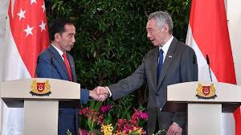
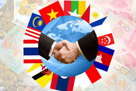
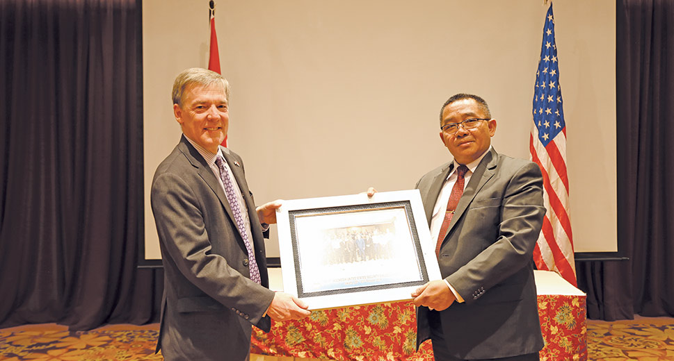
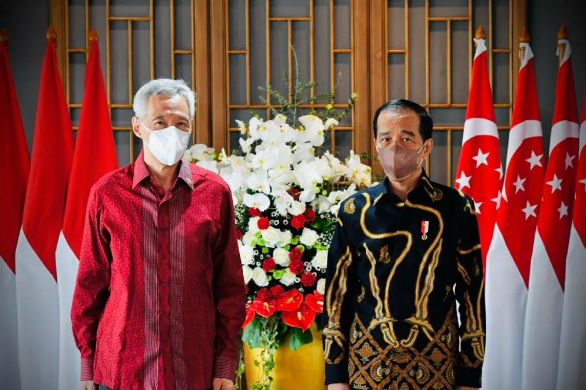

   
Kerjasama adalah kegiatan yang dimana kegiatan atau usaha yang dilakukan dua orang atau lebih untuk mencapai tujuan bersama. Kerjasama bisa dilakukan dimana saja, seperti gotong royong, kerja bakti, bakti sosial dan seterusnya. Kerjasama ini biasanya terjadi karena adanya dua pihak yang mempunyai tujuan yang sama dan mencapaikan tujuan itu dengan bersama-sama. Manfaat dalam bekerja sama, yaitu menumbuhkan rasa kebersamaan, pekerjaan lebih ringan dan cepat dan dapat mengatarakan ide-ide yang lebih banyak. Berikut mengenai apa itu kerjasama menurut para ahli:
1. Menurut Charlie H. Cooley, kerja sama timbul apabila orang menyadari bahwa mereka mempunyai kepentingan yang sama pada saat bersamaan, mempunyai cukup pengetahuan, dan kesadaran terhadap diri sendiri untuk memenuhi kepentingan-kepentingan. Selain masyarakat yang melakukannya, pemerintah juga ikut bekerja sama dengan negara yang lain untuk mencapai suatu tujuan.
2. Menurut Moh. Jafar Hafsyah, menyebutkan kerja sama memiliki arti yang sama dengan istilah kemitraan, yang berarti suatu strategi bisnis yang dilakukan oleh dua pihak atau lebih dalam jangka waktu tertentu untuk meraih keuntungan bersama dengan prinsip saling membutuhkan dan saling membesarkan.
3. Menurut Thomson dan Perry, kerja sama merupakan sumber yang sangat efisien untuk kualitas pelayanan dalam hal ini kerja sama dalam ranah ekonomi pada bidang jual beli.Semangat kerja sama di dalam kehidupan bermasyarakat akan terwujud pada salah satu kegiatan, yaitu gotong royong.
Secara garis besar, gotong royong diartikan sebagai bekerja bersama-sama dalam menyelesaikan pekerjaan dan menikmati hasil pekerjaan tersebut secara adil. Dengan demikian pada hakikatnya, dalam kegiatan gotong royong terdapat sebuah kerja sama untuk mencapai tujuan bersama.